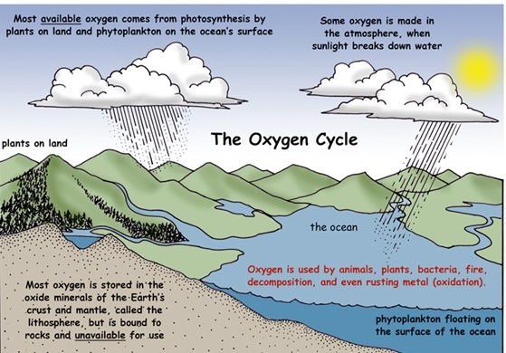
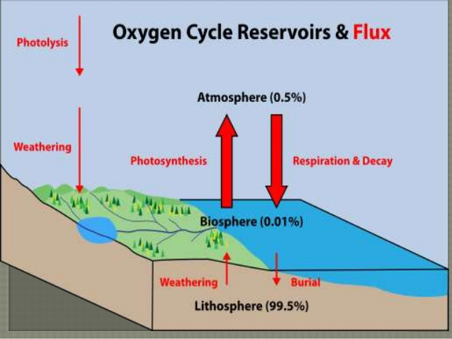

My Future School | Revolutionary Digital Learning Platform
Oxygen Cycle
Diagrams & Flow charts:


Theory & Explanation:
The Oxygen Cycle Oxygen is an important element to life on Earth.
It is the most common element of the human body. It makes up about 65% of the mass of the human body.
Most of this is in the form of water (H2O). Oxygen also makes up about 30% of the Earth and 20% of the atmosphere.
The Oxygen Cycle- Oxygen is constantly being used and created by different processes on planet Earth. All of these processes together make up the oxygen cycle. The oxygen cycle is interconnected with the carbon cycle.
In the simple example of the oxygen cycle shown below, you can see how oxygen is used and cycled by plants and animals. Plants are the main creators of oxygen in the atmosphere through the process of photosynthesis. Here the tree uses sunlight and carbon dioxide to produce energy and releases oxygen. The giraffe breathes in the oxygen and then breathes out carbon dioxide. The plant can then use this carbon dioxide and the cycle is complete.
Processes That Use Oxygen
Breathing -
The scientific name for breathing is respiration. All animals and plants use up oxygen when they breathe. They breathe in oxygen and breathe out carbon dioxide.
Decomposing - When plants and animals die, they decompose. This process uses up oxygen and releases carbon dioxide.
Rusting - This is also called oxidation. When things rust they use up oxygen.
Combustion- There are three things needed for fire: oxygen, fuel, and heat. Without oxygen you can't have a fire. When things burn, they use up oxygen and replace it with carbon dioxide.
Processes That Produce Oxygen
Plants - Plants create the majority of the oxygen we breathe through a process called photosynthesis. In this process plants use carbon dioxide, sunlight, and water to create energy. In the process they also create oxygen which they release into the air.
Sunlight - Some oxygen is produced when sunlight reacts with water vapor in the atmosphere.
Fun Facts
Even though fish breathe under water they still breathe oxygen. Their gills extract the oxygen from the water. There is a lot of oxygen stored up in the oxide minerals of the Earth's crust. However, this oxygen isn't available for us to breathe.
One of the biggest sources of oxygen is phytoplankton that live near the surface of the ocean. Phytoplankton are tiny little plants, but there are lots of them.